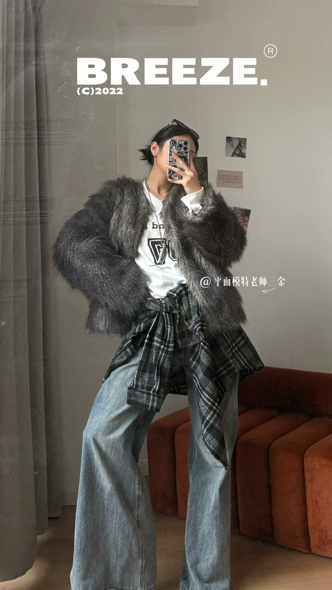
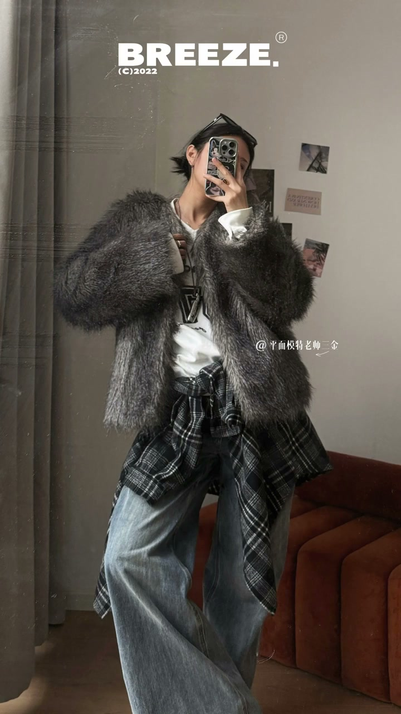
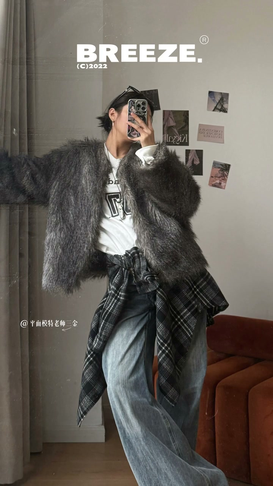

01
中文
当我把手机镜头换成一倍，我的对镜自拍瞬间就高级了。
EN
Switching to 1x zoom instantly makes the mirror selfie premium.
表达提示1x zoom（一倍焦段）
Scene English · 拍摄 · 对镜自拍
7 Premium Mirror-Selfie Standing Poses for Clothes People & Tall Girls
🎧 语音讲解
Move one: once I switch the phone to 1x zo…
情境一倍焦段+跨步+插腰。
当我把手机镜头换成一倍，我的对镜自拍瞬间就高级了。
Switching to 1x zoom instantly makes the mirror selfie premium.
表达提示1x zoom（一倍焦段）
把腿横着跨出去大概一个肩膀的距离，反手拨开衣服插了一下腰。
Step a leg out a shoulder's width, brush clothes aside, hand on hip.
表达提示step and hip（跨步插腰）
1x zoom（一倍焦段
step and hip（跨步插腰

Moves two and three: later I moved closer …
情境挡脸+交叉腿+抓领口扭身。
因为没化妆还特意用手挡住了脸。
I covered my face with a hand since I wore no makeup.
表达提示cover the face（挡脸）
把腿放到另一条腿前面，用手抓了一下领口。
Place one leg in front of the other and grab the collar.
表达提示cross legs（交叉腿）
为了上肩能更好看，我还特地扭了一下身子。
I twisted my body so the shoulder line looks better.
表达提示twist the body（扭身）
cover the face（挡脸
cross legs（交叉腿

Moves four and five: I wanted better propo…
情境借力支撑伸腿+裤装开膝搭腿。
我找了个地方撑着自己，好让腿能伸得更远一些。
I leaned on something so my legs could stretch farther.
表达提示lean and stretch（借力伸腿）
因为穿的是裤子，所以选择了能让膝盖打开的腿形。
With pants on, I chose a shape that opens the knee.
表达提示open the knee（膝盖打开）
干脆把腿搭膝盖上又来了一张。
I just crossed a leg over the knee for another shot.
表达提示cross over the knee（搭膝盖）
lean and stretch（借力伸腿
open the knee（膝盖打开

Moves six and seven: it felt a bit too pos…
情境扭胯勾脚尖+开门膝盖搭门框。
往旁边扭一下胯，勾点脚尖起来看着更随意。
Twist the hip to the side, point a toe up for a casual look.
表达提示casual vibe（随意感）
把手机那边的膝盖向侧面打开了，用手搭着门框。
Open the knee on the phone side and hold the door frame.
表达提示open knee and frame（开膝搭框）
很常规，但也绝对不会出错。
Very standard, but it never goes wrong.
表达提示never goes wrong（不会出错）
casual vibe（随意感
open knee and frame（开膝搭框
说对镜要点
说挡脸技巧
说领口扭身
说借力伸腿
说开膝搭框
对镜拍用1倍焦段更高级。
没化妆用手挡脸。
腿要开膝或交叉。
抓领口扭身让肩线更好看。
搭门框时膝盖向侧面打开。